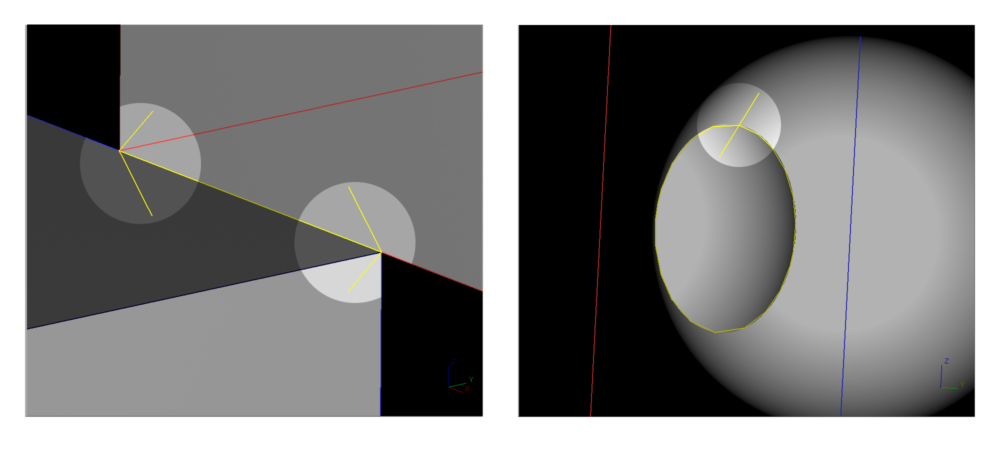
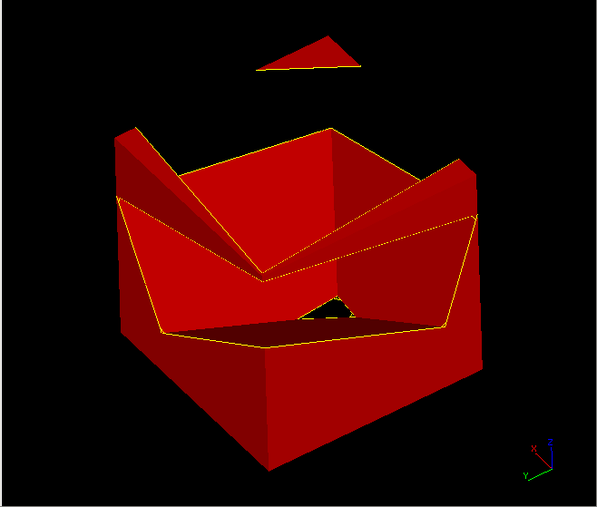
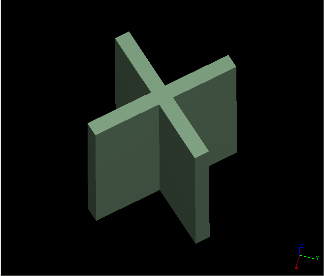
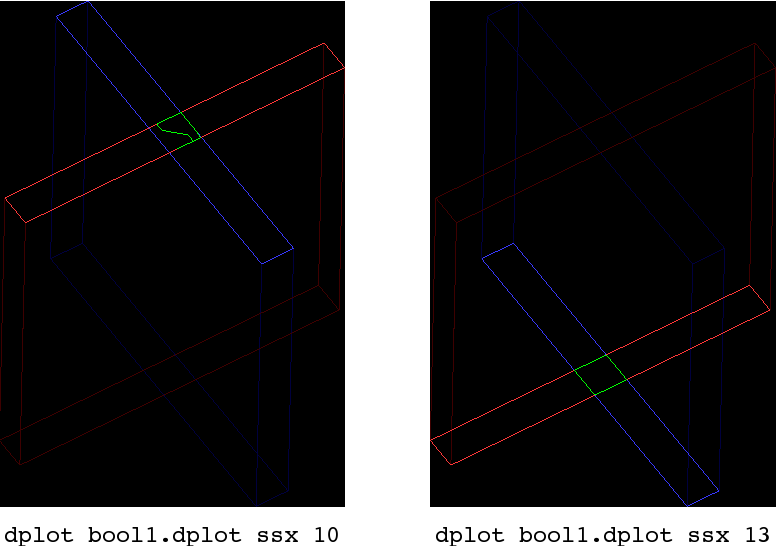
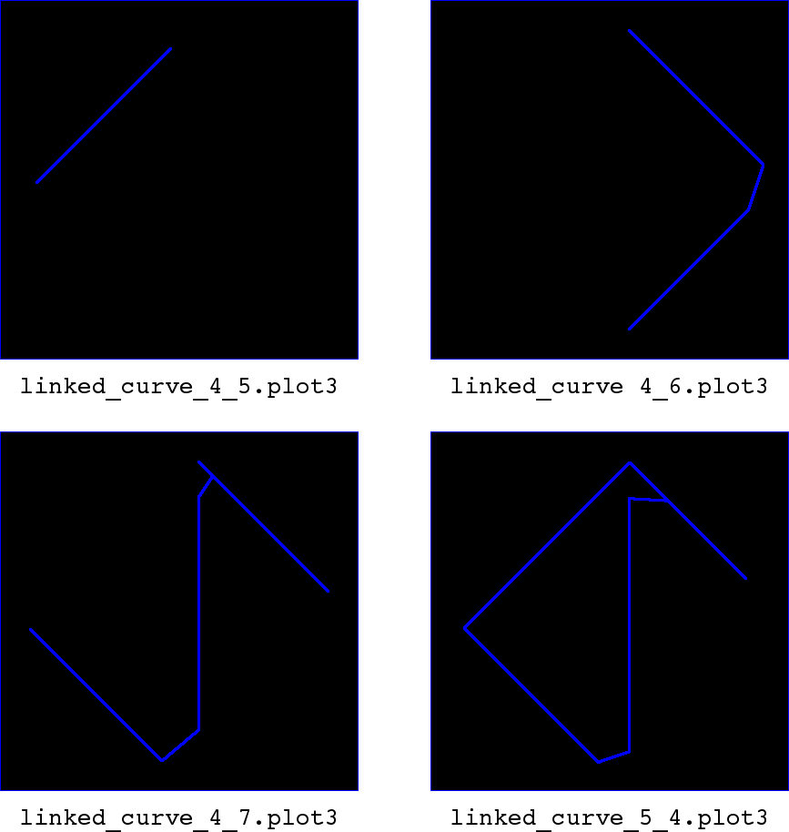

NURBS Boolean Evaluation Development Guide
- 1. Introduction
- 2. NURBS Boolean Evaluation Using the
brepCommand - 3. Overview of the Implementation
- 4. Debugging NURBS Boolean Evaluations
1. Introduction
This document provides a technical overview of BRL-CAD’s Non-Uniform Rational Basis Spline (NURBS) Boolean evaluation implementation. It includes details on user command line functionality, an overview of the algorithms and source code implementation, details on developer debugging facilities, and an overview of the debugging process (with a real example). This is intended to be a practical resource for software developers wanting improve BRL-CAD’s NURBS Boolean evaluation implementation.
It is assumed that the reader has rudimentary familiarity with C/C++ software development and the BRL-CAD software package. This includes how to acquire, modify, and rebuild the BRL-CAD source code, and how to run and debug C/C++ applications. It is also assumed that the reader has a some understanding of concepts from 3D geometry such as surface normal vectors, parametric functions, boundary representation (B-Rep) geometry, and trimmed NURBS.
Section 2 of this document briefly describes NURBS Boolean evaluation in BRL-CAD from a user perspective.
Section 3 outlines the major algorithms being used and the files and functions in the BRL-CAD source code that implement them. It also explains important concepts helpful in understanding and modifying the source code.
Section 4 covers the current process for debugging evaluation issues. It describes available debugging tools, and provides step-by-step instructions for tracking down bugs based on debug information, including a complete example of debugging a real evaluation issue.
It should be noted that some of the information in this document may become outdated due to future changes to the BRL-CAD software suite. Any developer making significant changes to the implementation should update the copy of this document that is included with the BRL-CAD source code.
2. NURBS Boolean Evaluation Using the brep Command
The brep command is available in BRL-CAD’s MGED and Archer
applications. If the command is run with a single argument naming a
combination, the components of the combination are converted into
NURBS objects which are combined into a single evaluated NURBS object
according to the Boolean operations in the combination.
By default, the evaluated B-Rep-type object is written to the database
with its original name plus the suffix .brep (e.g. running the
brep command on obj produces obj.brep). If a specific name is
desired for the output object, it can be provided as the second
argument to the brep command.
There are a number of known limitations to the NURBS Boolean evaluator as currently implemented:
-
May produce incorrect output due to unhandled intersection cases.
-
Unoptimized performance resulting in potentially significant runtimes.
-
Material properties of source objects are discarded.
-
Some primitive conversions to NURBS are undefined (e.g., an infinite halfspace).
-
Hollow objects are not built topologically continuous.
3. Overview of the Implementation
3.1. Technical Approach
The technical approach used for evaluating Boolean operations on NURBS entities involves calculating geometric intersections, trimming surfaces accordingly, and stitching together a resulting object. Boundary representation NURBS objects are composed of faces, edges, and vertices; and these topologically describe how surfaces, curves, and points are joined together to represent geometry. The geometry is used to find intersections. The topology is used in the application of Boolean logic. This is oversimplified as there are also trimming curves, loops, orientations, and other details involved, but this is nonetheless a useful foundation for understanding the basic approach employed.
BRL-CAD heavily integrates and extends the OpenNURBS Toolkit by Robert McNeel & Associates, developers of the proprietary Rhinoceros freeform NURBS modeling software. BRL-CAD heavily uses OpenNURBS for trimmed NURBS geometry representation (both in-memory and on-disk) and implements functionality not included with OpenNURBS such as ray tracing and Boolean evaluation. [1] Additional functionality implemented for BRL-CAD is primarily contained within the boundary representation and ray trace libraries (LIBBREP and LIBRT). [2] The overall NURBS Boolean evaluation algorithm is based on the paper BOOLE: A System to Compute Boolean Combinations of Sculptured Solids. (S. Krishnan et al., 1995). The main implementation file for the Boolean evaluation algorithm is boolean.cpp.
The NURBS surface-surface intersection algorithm is based on the "NURBS Intersection Curve Evaluation" section of the paper Performing Efficient NURBS Modeling Operations on the GPU (A. Krishnamurthy et al., 2008). A detailed outline of the algorithm, as implemented, appears in the main implementation file for the NURBS Surface-Surface intersection algorithm, intersect.cpp.
3.3. Descriptions of Major Functions
3.3.1. boolean.cpp
The ON_Boolean() function performs a single Boolean evaluation on two B-Rep objects.
A single execution of the brep command in MGED or Archer may involve passing several successive pairs of B-Rep objects to this function.
int
ON_Boolean(
ON_Brep *evaluated_brep,
const ON_Brep *brep1,
const ON_Brep *brep2,
op_type operation);In the nontrivial case where the bounding boxes of brep1 and
brep2 intersect, get_evaluated_faces() is called to get the
trimmed NURBS faces of the evaluated Boolean result. The faces are
then combined into a single B-Rep object returned via the
evaluated_brep argument.
ON_ClassArray< ON_SimpleArray<Trimmed Face *> >
get_evaluated_faces(
const ON_Brep *brep1,
const ON_Brep *brep2,
op_type operation);The intersection curves between the faces of brep1 and
brep2 are found by get_face_intersection_curves(). These
curves are used to split the original surfaces into pieces, each
becoming a new trimmed NURBS face. The categorize_trimmed_faces()
function is used to identify which pieces, based on the Boolean
operation, are part of the evaluated result. Each
TrimmedFace whose m_belong_to_final member is marked
TrimmedFace::BELONG is used by ON_Boolean() to create
the final evaluated result.
ON_ClassArray< ON_SimpleArray<SSICurve> >
get_face_intersection_curves(
ON_SimpleArray<Subsurface *> &surf_tree1,
ON_SimpleArray<Subsurface *> &surf_tree2,
const ON_Brep *brep1,
const ON_Brep *brep2,
op_type operation);Each pair of brep1 and brep2 surfaces whose bounding
boxes intersect are passed to the ON_Intersect() surface-surface
intersection routine. The get_subcurves_inside_faces() routine is
used to remove irrelevant parts of the surface-surface intersection
curves based on the trimming curves of the associated faces.
3.3.2. intersect.cpp
int
ON_Intersect(const ON_Surface *surfA,
const ON_Surface *surfB,
ON_ClassArray<ON_SSX_EVENT> &x,
double isect_tol,
double overlap_tol,
double fitting_tol,
const ON_Interval *surfaceA_udomain,
const ON_Interval *surfaceA_vdomain,
const ON_Interval *surfaceB_udomain,
const ON_Interval *surfaceB_vdomain,
Subsurface *treeA,
Subsurface *treeB);The first stage of the surface-surface intersection algorithm attempts to identify overlap intersections (areas where the two surfaces are coincident). Our assumption is that the boundary curve of any overlap region must be formed from isocurves of the overlapping surfaces.
Subcurves of isocurves that intersect both surfaces, such that the
surfaces are coincident on one side of the curve but not the other,
potentially form part of overlap boundaries. These curves are
identified using find_overlap_boundary_curves(). To avoid wasted
computations, this function also returns intersection points and
non-boundary intersection curves which were found during the search
for boundary curves.
Then, the split_overlaps_at_intersections() function is run, and
curve pieces that share endpoints are stitched together. The stitched
boundary curves which close to form loops are recorded as overlap
intersection events.
The second stage of the surface-surface intersection algorithm
attempts to identify other intersection curves and points. The input
surfaces surfA and surfB are subdivided into four
subsurfaces, whose bounding boxes are tested in pairs to see which
subsurfaces potentially intersect. This subdivision repeats to a
fixed depth determined by the constant MAX_SSI_DEPTH
(defined in brep_defines.h).
Subsurfaces that lie completely inside an overlap region identified in
the first stage are discarded. Each remaining pair of subsurfaces
with intersecting bounding boxes is tested for intersection. This is
accomplished by approximating each subsurface with two triangles (i.e.
a 'split' quad whose corners coincide with those of the actual
subsurface patch, which has been split diagonally for a more accurate
fit). The triangles are then intersected, and the average of all
intersection points is used as the initial guess for a Newton
iterative solver, implemented by newton_ssi(), which searches for a
point close to the initial guess point which lies on both surfaces.
Solved points that reside inside an overlap region identified in the
first stage are discarded. Of the remaining solved intersection
points between surfA and surfB, those which are near
one another are stitched together into polyline curves. If a line or
conic curve can be fit to the polyline curves in 2D, the fit curve
replaces the original surfA and/or surfB polyline
curve.
3.4. The OpenNURBS API
BRL-CAD leverages the OpenNURBS library primarily for its classes that represent general (i.e. NURBS) B-Rep surface, curve, and point geometry. The following sections describe the OpenNURBS library symbols most commonly used in the NURBS Boolean evaluation implementation, with relevant usage notes.
|
When using an OpenNURBS utility that hasn’t been used elsewhere in the implementation, always check the documentation and the implementation to make sure it does what you expect. Misleading methods have been misused in the past. For example, Another example is |
3.4.1. Arrays
OpenNURBS includes two general array classes, ON_ClassArray
and ON_SimpleArray, which are similar to C++'s
std::vector. Besides having slightly friendlier interfaces,
they also feature some higher-level member functions like Reverse()
and Quicksort().
The primary difference between the two classes is that
ON_SimpleArray doesn’t bother constructing and destructing
its items. This makes it more efficient than ON_ClassArray,
but unsuitable for class objects (though pointers to objects are
fine). ON_ClassArray requires items to have correctly
implemented copy and assignment functions.
The NURBS Boolean evaluation implementation generally employs a
combined array of known size to index elements from two input objects.
For example, if brepA has i faces and brepB
has j faces, a single array of i + j elements is
created.
|
The OpenNURBS array classes do not check for out-of-bounds indexing.
This isn’t a problem in the simple case where items are added with
However, if the array will be a fixed size whose items are assigned in
a non-sequential order, both the capacity and count should be set,
or else the reported |
3.4.2. Memory
Curves and surfaces are nearly always allocated on the heap and referenced by pointers, both in the OpenNURBS library, and in the NURBS Boolean evaluation implementation.
Mostly these allocations are simply done with the new keyword as
with any other class. However, a few classes, notably
ON_Brep have a New() function that wraps the allocation,
which is preferred over using new directly for technical reasons
specified in the OpenNURBS opennurbs_brep.h header.
Pointers to objects, curves in particular, are generally "stolen" to avoid having to create a new copy of the object.
|
Classes containing heap-allocated objects delete them in their destructors. Proper stealing of pointers requires the instance’s members be set to NULL. |
3.4.3. Tolerance Tests
The OpenNURBS routines make extensive use of the symbol
ON_ZERO_TOLERANCE in calculations to test if a result is to be
considered equal to zero, or if two values are to be considered equal.
|
The NURBS Boolean evaluation implementation generally uses the
function This function is also used to determine if objects are close enough to
be considered intersecting: |
3.4.4. 2D and 3D Points
The ON_2dPoint and ON_3dPoint classes intuitively
implement operators such as + and * to allow points to be
easily summed and scaled.
The operator[] functions are notable because coordinates are not
actually stored as arrays in these classes, but rather in the named
members x, y, and z. So while accessing
coordinates as pt[0], pt[1] is possible, the more
readable pt.x, pt.y, is more typically utilized.
The most frequently used member function is DistanceTo(const
ON_3dPoint &p), used to check inter-point distances, either as part
of an intersection test or to identify closeable gaps or duplicate
points.
|
The NURBS Boolean evaluation implementation generally constructs 2D
curves by populating an |
3.4.5. Bounding Boxes
ON_BoundingBox is returned by the BoundingBox(),
GetTightBoundingBox(), and GetBBox() functions, which are
implemented by all geometry classes inheriting from
ON_Geometry.
The most commonly used members of ON_BoundingBox are
Diagonal() (usually in an expression such as
bbox.Diagonal().Length() used as a scalar size estimate), and
IsPointIn() and MinimumDistanceTo() (used in intersection tests).
3.4.6. Domain Intervals
ON_Interval is used to represent the domains of parametric
curves and surfaces. The domain starts at m_t[0] and ends
at m_t[1]. These members can be set directly or via
Set(double t0, double t1).
|
The start, end, and overall length of the domain are arbitrary,
and |
The ParameterAt(double x) function translates a normalized
parameter (from a domain starting at 0.0 and ending at 1.0) into a
real parameter. Thus, the start of the domain is at
domain.ParameterAt(0.0), the midpoint is at
domain.ParameterAt(.5), etc.
3.4.7. Parametric Curves
The most frequently used geometry class is ON_Curve, a
generic container for parametric curves. The curve is interrogated by
using the PointAt(double t) method to evaluate points at arbitrary
values inside the curve’s domain, which is specified by the
ON_Interval returned by the Domain() method. The start and
end points of the curve have dedicated access methods,
PointAtStart() and PointAtEnd().
|
|
All the PointAt() methods return an ON_3dPoint, though in
the common case where ON_Curve objects are representing 2D
trim curves, the z coordinate will be 0.0.
It is sometimes necessary to reverse a curve’s domain. This is done
using the Reverse() method to facilitate stitching curves together.
The function has a Boolean int return value that must be checked.
if (curveA->PointAtStart().DistanceTo(curveB->PointAtStart()) < dist_tol) {
if (curveA->Reverse()) {
curveA = link_curves(curveA, curveB);
}
/* curves that cannot be reversed are degenerate and discarded */
}|
Comparing curve endpoints, or even just bounding boxes (retrieved via
the |
A copy of a curve is easily made using the Duplicate() member
function, which simply wraps a standard copy procedure:
ON_Curve* Duplicate()
{
ON_Curve *p = new ON_Curve;
if (p) *p = *this;
return p;
}This function is common to all OpenNURBS geometry classes, but curves
are by far the most frequently duplicated objects. However, if curves
are simply being retained from a working set of container objects, the
curve pointers are generally "stolen" rather than copied, with curve
members set to NULL so that the curves aren’t destructed
with the containers.
3.4.8. Lines
ON_Line is used to represent an infinite line, defined by two
points, from and to.
ON_Line is not a subclass of ON_Curve and should not
be confused with ON_LineCurve (which has an ON_Line
member), though it does have some of the same methods as an
ON_Curve class, including PointAt(double t). However,
because the line has an infinite domain, it can be evaluated at any
t value, though evaluating at 0.0 returns from and
evaluating at 1.0 returns to, as if the line was a parametric
curve with a domain between 0.0 and 1.0.
ON_Line has helpful line-specific methods such as
ClosestPointTo(const ON_3dPoint &point). Again, because the line is
treated as infinite, this function doesn’t necessarily return a point
in the segment between from and to.
3.4.9. Surfaces
An ON_Surface has a similar interface to an
ON_Curve, but adapted to support the surface’s two domains,
u and v (sometimes called s and
t). These also correspond to as the 0 and 1 surface domains
(as in the first example in following) or with an x and
y parameterization (as shown in the second example).
(u, v) point into 3D.ON_Interval udom = surface->Domain(0);
ON_Interval vdom = surface->Domain(1);
ON_3dPoint surf_midpt_3d = surface->PointAt(udom.ParameterAt(.5), vdom.ParameterAt(.5));ON_Interval tdom = trim_curve->Domain();
ON_3dPoint trim_midpt_uv = trim_curve->PointAt(tdom.ParameterAt(.5));
ON_3dPoint trim_midpt_3d = surface->PointAt(trim_midpt_uv.x, trim_midpt_uv.y);3.4.10. Boundary Representation Objects
ON_Brep is the top-level OpenNURBS class used to represent
the two input objects and the evaluated result of the ON_Boolean()
function. The geometry is encoded as a collection of faces, which for
our purposes should be topologically connected to enclose solid
volumes.
An object’s faces are ON_BrepFace objects stored in the
ON_Brep face array, m_F[].
Each ON_BrepFace is defined as the subset of an
ON_Surface lying inside the face’s outerloop (a.k.a. the
face boundary) and outside all of its innerloops (a.k.a. trim
loops or just trims).
The loops of an ON_BrepFace are listed in its loop array
m_li[] as indexes into the associated ON_Brep object’s
ON_BrepLoop array, m_L[]. The first (and possibly
only) loop listed in the face’s loop index array is the outerloop, and
all following loops are inner trim loops. The type of the loop is
also recorded in the loop’s m_type member.
brep->m_L[brep->m_F[0]->m_li[0]].m_type; // ON_BrepLoop::outer
brep->m_L[brep->m_F[0]->m_li[1]].m_type; // ON_BrepLoop::inner
...
brep->m_L[*brep->m_F[0]->m_li.Last()].m_type; // ON_BrepLoop::inner3.4.11. Intersection Events
There are two OpenNURBS classes for representing
intersections. ON_X_EVENT is used for curve-curve and
curve-surface intersections. ON_SSX_EVENT is used for
surface-surface intersections.
|
An additional class, |
The intersection classes enumerate a number of intersection types.
Over the course of an evaluation, the m_type of intersection
events is repeatedly checked to determine how each event should be
processed.
When two curves are coincident with one another over a portion of
their domains, m_type will be ON_X_EVENT::ccx_overlap.
When two surfaces are coincident over a portion of their domains,
m_type will be ON_SSX_EVENT::ssx_overlap.
There are two ways that two surfaces can intersect in a curve. If the
normals of the surfaces are parallel over all points of the curve, the
intersection m_type is ON_SSX_EVENT::ssx_tangent, and
ON_SSX_EVENT::ssx_transverse otherwise.
Similarly, if two surfaces intersect at a point, the intersection
m_type is ON_SSX_EVENT::ssx_tangent_point if the normals
of the two surfaces are parallel at that point, and
ON_SSX_EVENT::ssx_transverse_point otherwise.
The m_type of an intersection event determines how values in
the m_a[], m_b[], m_A[], and m_B[] array
members of the event instance are to be interpreted (documented in the
OpenNURBS opennurbs_x.h header).
|
It’s very easy to confuse the |
For an ON_X_EVENT representing a curve-curve intersection
whose m_type is ON_X_EVENT::ccx_overlap, (m_a[0],
m_a[1]) represents the portion of the first curve’s domain that
overlaps with the second curve, whereas in other cases m_a[1]
is simply a duplicate of m_a[0].
As a result, a pattern seen repeatedly in the NURBS Boolean evaluation implementation is a loop over intersection events that gathers intersection points for processing, including overlap endpoints if the event represents an overlap.
for (int i = 0; i < x_event.Count(); ++i) {
x_points.Append(x_event[i].m_a[0]);
if (x_event[i].m_type == ON_X_EVENT::ccx_overlap) {
x_points.Append(x_event[i].m_a[1]);
}
}3.5. Code Conventions and Pitfalls
3.5.1. 2D vs 3D
Implicit in working with parametric geometry is that some operations are done in 2D while others are done in 3D and it’s very important to know the dimension currently being worked in at all times.
As mentioned in the section above on 2D and 3D points, 3D classes are often used in the implementation to store 2D points, and thus are not a reliable indication that an operation is happening in 3D.
Being that operations in 2D tend to be a lot simpler, 2D is normally the dimension being worked in. However, because parametric curves and surfaces of different objects have different parameterizations, determining where two objects intersect can’t be done by comparing 2D parameters; it must happen in 3D.
3.5.1.1. Naming Convention
Generally, when 2D and 3D operations are taking place near one another, you’ll see a naming convention being used to disambiguate 2D and 3D data. 3D identifiers are unadorned, while 2D names will be suffixed with 1/2 or A/B.
Suppose for example we have three arrays of corresponding points that
are samples along an intersection curve between two surfaces. The 3D
array might simply be named points. The corresponding 2D
points in the domains of the two surfaces involved are then very
likely to be named points1 and points2 or pointsA
and pointsB. Whether the 1/2 or A/B suffixes are used
typically depends on whether the input surfaces have names like
surf1/surf2 or surfA/surfB. The latter
is more likely to be used when processing intersection events, as
members of the OpenNURBS intersection event classes are named
m_a and m_b, etc.
3.5.1.2. Intersection Tolerances
The ON_Intersect() intersection routines (intersect.cpp)
generally take an isect_tol argument, which is a 3D tolerance
normally equal to the constant ON_INTERSECTION_TOL. 2D
tolerances, following the convention described above, are generally
named isect_tolA and isect_tolB.
2D tolerance values for curves and surfaces are derived from the 3D
tolerance value using the tolerance_2d_from_3d() routines. The
length of the diagonal of the 3D bounding box of the curve or surface
is divided by the length of the 2D domain to get a rough estimate of
what distance in the 2D domain corresponds to the 3D tolerance
distance. In other words, the hope is that two points on a
curveA or surfA that are isect_tolA units apart
in 2D, will evaluate to two 3D points that are isect_tol units
apart in 3D.
|
The difference between |
3.5.1.3. Curve Traversal Directions
It’s important to remember that because parameterizations are
arbitrary, there is no correspondence whatsoever between a 2D curve in
one surface’s domain and another surface’s domain, even when those 2D
curves evaluate to the same 3D curve. In particular, you cannot
assume that traversing different curves along their domain from
m_t[0] to m_t[1] translates to a consistent traversal
direction in 3D, or even that each 2D curve’s
m_t[0]/m_t[1] corresponds to the same 3D starting
point on a closed curve.
3.5.2. Accumulated Error
By the nature of the math involved in representing parametric geometry (e.g. converting between 2D and 3D, and solving intersections between objects with different parameterizations) values that are expected to be identical are generally only equal within a certain tolerance, or error.
Over the course of the evaluation, the same data is interrogated and processed a number of times. If ignored, the error introduced in one stage of the evaluation can grow over subsequent stages, causing an incorrect determination that leaves a curve unclosed, a surface unsplit, and ultimately an incorrect evaluated result.
As a consequence, it’s generally a good idea to remove fuzziness when you find it, and avoid algorithms that introduce more error.
3.5.2.1. Clamping
Start and end points of closed curves are rarely identical. So if a curve is found to be closed within tolerance, it’s a good idea to actually set the end point equal to the start point. Similarly, if an interval of a domain is calculated whose endpoints are within tolerance of the domain endpoints, the entire domain should be used.
|
Producing subcurves of existing curves is a common operation in the NURBS Boolean evaluation implementation. This is a prime example of an operation that can introduce fuzziness into the evaluation. For example, we may be splitting a curve to remove a portion of it, and end up with two new curves with endpoints that used to align when part of the original curve, but no longer do. The |
3.5.2.2. Iterated Solutions
The iterative method used to solve points on parametric curves and surfaces is expected to produce better answers given better inputs and more iterations. However, our algorithms can’t always produce sufficient inputs, and the value the solver converges on isn’t always the correct one.
This fuzziness produced in the solver’s results can be mitigated in the context of finding intersection curves for example, because we solve many points and fit a curve between them. So, one unsolved point on the curve isn’t going to cause an evaluation failure.
|
It’s tempting to test curve characteristics or make inside/outside
determinations, etc. by using the |
4. Debugging NURBS Boolean Evaluations
The current ongoing development activity for NURBS Boolean evaluation is debugging specific evaluation cases in order to find bugs and unhandled geometry cases in the implementation to support the evaluation of more geometry.
4.1. Debug Plotting
There are two Archer commands that can be used to plot individual components of brep NURBS objects to facilitate debugging.
These commands work by creating temporary wireframe objects that are
drawn in the view window. While drawn, these objects appear in the
in-memory database, so the ls command will show these objects (with
names like _BC_S_<obj>_646464> or
bool1_brep1_surface03838ff), but they are not saved with the
database, and are deleted when erased from the display.
|
Debug wireframe objects are not drawn the same way as geometry, and do
not trigger an automatic resize and refresh of the view. This means
that after running a Also be aware that debug wireframes are drawn in a variety of hard-coded colors to help distinguish different subcomponents. These colors were designed to be best visible using a view whose background color is black (this should be the default, but can be easily changed in Archer via the view window’s right-click menu). |
4.1.1. The brep Command
The Archer brep command (also implemented in MGED) can be used to
get structural information about B-Rep objects and visualize different
subcomponents.
Most importantly, brep <obj> info will report summary information,
including the number of NURBS surfaces and faces and brep <obj> plot
S <index> can be used to plot individual surfaces in 3D.
This is the primary way you can conceptually link a surface or face
index to the 3D geometry it represents. So if you notice an error in
an object while viewing it in the editor, you can use the brep
command to determine the index of the surface with the error, and then
inspect the in-memory object in a debugger using that index into the
final surface array, tracing that surface object to where it was
created, etc.
|
For evaluations involving more than two objects, the final brep NURBS object is made by converting two leaf objects into breps, performing a Boolean evaluation on them, converting the next relevant object to brep and combining it with the first intermediate evaluation to make a second intermediate evaluation, and so on up the tree. In order to inspect the surfaces and indices for a particular stage of
the overall evaluation using the |
4.1.2. The dplot Command
The dplot command is used to visualize the results of different
stages of the NURBS Boolean evaluation algorithm. This makes it
easier to isolate the source of a problem in an evaluation.
Unlike the brep command, the dplot command is purely a development
tool. Its implementation does not honor library boundaries and does
not conform to the typical conventions for editor commands, and for
this reason is only available as an Archer command in the NURBS
Boolean evaluation development branch
(https://sourceforge.net/p/brlcad/code/HEAD/tree/brlcad/branches/brep-debug/).
In the development branch, the NURBS Boolean evaluation source code
contains additional calls to DebugPlot functions (implemented
in debug_plot.cpp) that create wireframe visualizations of
data produced during the evaluations.
For development convenience, these wireframes are not saved as
database objects, but rather are written as files in the current
directory, with names of the form bool1*.plot3_. An
additional bool1.dplot is written which describes the
.plot3 files that were written in a format understood by the
dplot command.
One set of files is written for each evaluation. Between evaluations, a static counter increments the numeric suffix that’s used in the output filenames. So for a combination consisting of three objects, the bool1* files will hold results from the intermediate boolean evaluation between the first two objects in the combination, and the bool2* files will hold results from the final evaluation between the intermediate evaluated object and the remaining leaf of the original comb.
The DebugPlot functions always use the same file names and do
not check if written files already exist. It is assumed that you will
run an evaluation, inspect the generated files using the dplot
command, and then manually remove (or just move) the generated
.dplot and .plot3 files before performing another
evaluation with the brep command.
4.1.2.1. The ssx Subcommands
-
dplot bool1.dplot ssxlets you interactively step through the pairs of surfaces whose axis-aligned bounding boxes were found to intersect. The wireframes of the B-Rep objects being intersected are drawn with the current surface pair highlighted. Thessx_indexassigned to the pair, which can be used as an argument to other dplot commands, is displayed in the command window. -
dplot bool1.dplot <ssx_index>lets you interactively step through the specific surface-surface intersections found between the pair of surfaces identified by anssx_index, excluding isocurve-surface intersections (shown bydplot bool1.dplot isocsx).To make it easier to check that drawn intersection curves are of the correct type and are open or closed curves as appropriate, intersections are color-coded by type (e.g. transverse intersections are drawn in yellow) and the ends of lines are decorated with arrows to indicate open ends or perpendicular segments to indicate coincident endpoints.
Figure 7. Curve Endpoint Decoration
The ssx pairs are recorded in the find_overlap_boundary_curves()
function in intersect.cpp.
4.1.2.2. The isocsx Subcommands
-
dplot bool1.dplot isocsx <ssx_index>lets you step through the isocurve-surface intersections from the pair of intersecting surfaces identified by the givenssx_index. Wireframe plots of the two surfaces are drawn, with one surface and an intersecting isocurve of the second surface highlighted. Each combination of isocurve and surface is assigned anisocsx_index(shown in the command window) that can be used as an argument in the second form of theisocsxsubcommand. -
dplot bool1.dplot isocsx <ssx_index> <isocsx_index>shows the actual intersection curve found between the isocurve and surface pair identified by the givenssx_indexandisocsx_index.The plotted intersection curves are color-coded for easy type-checking, e.g. overlap intersections are drawn in green.
The isocsx curves are written in the find_overlap_boundary_curves()
function in intersect.cpp.
4.1.2.3. Face-Evaluation Subcommands
-
dplot bool1.dplot fcurves <ssx_index>lets you step through the surface-surface intersection curves identified by the givenssx_indexafter they’ve been clipped by face trimming curves.The clipped 2D intersection curves for the first surface are drawn projected to 3D, followed by the matching curves for the second surface.
-
dplot bool1.dplot lcurvessteps through the final 3D intersection curves used to split faces, after contiguous face-clipped pieces have been linked together.After each curve is drawn independently, all curves are drawn at the same time.
This subcommand doesn’t draw any contextual geometry; only the linked curves. Manually drawing a transparent shaded view of the original geometry usually works well for context.
Figure 8. Linked Curves in Context -
dplot bool1.dplot faceslets you step through the new set of faces formed by splitting the original faces with the final linked intersection curves. Faces that are considered part of the final result are drawn highlighted, while faces that are discarded are drawn dim.After each face is drawn independently, all faces are drawn at the same time.
This subcommand doesn’t draw any contextual geometry; only the face curves. Manually drawing a transparent shaded view of the original geometry usually works well for context.
The clipped face curves are recorded in
get_face_intersection_curves() in boolean.cpp.
The linked curves and the categorized split faces are recorded in
get_evaluated_faces() in boolean.cpp.
4.1.3. Plotting Arbitrary Evaluation Curves
It’s possible to write out custom curves from any part of the
evaluation (i.e. those not covered by dplot) and view them in
MGED/Archer.
You can pass a 3D ON_Curve to the DebugPlot::Plot3DCurve()
function or a 2D ON_Curve and an associated
ON_Surface to the DebugPlot::Plot3DCurve() function.
Both of these functions take an arbitrary filename for a plot3 file
the function will write, as well as a color for the curve. The
DebugPlot::Plot3DCurve() has an optional vlist parameter
which you should omit (see the full definitions in
debug_plot.cpp).
// somewhere in boolean.cpp
if (face1_curves.Count() > 0 && face1_curves[0] != NULL) {
static int calls = 0;
unsigned char mycolor[] = {0, 0, 62};
std::ostringstream plotname;
// generate a unique filename
plotname << "mycurve" << ++calls << ".plot3";
// plot using method of global DebugPlot instance 'dplot'
dplot->Plot3DCurveFrom2D(surf1, face1_curves[0],
plotname.str().c_str(), mycolor);
}After running an evaluation that produces a custom plot3 file, you can
draw it using the overlay editor command.
Archer> overlay mycurve1.plot3 1
4.2. Debugging with the dplot Command
4.2.1. Tracing Output to the Code That Created It
After you notice a problem in the output shown by the dplot command,
you need to locate the source code that created the erroneous geometry
so you can start debugging. The following sections provide example
procedures you can perform in Archer and a debugger to start
investigating some common issues.
If the ssx subcommand shows that a surface-surfaceintersection is missing…
-
Use the
infoandplotsubcommands of thebrepcommand to find the indexes (<i>and<j>) of the two faces involved in the missing intersection.For a multi-part evaluation, you’ll need to manually create the appropriate intermediate evaluation, corresponding to the bool<n>.dplot showing the error, to run the
brepcommand on. -
Set a breakpoint at the
ON_Intersect()call inget_face_intersection_curves()with the conditioni == <i> && j == <j>.For a multi-part evaluation, you’ll need to first skip to the correct invocation of
ON_Boolean(), either manually, or by conditioning a breakpoint on the value of the staticcallsvariable defined at the top of that function. -
Start stepping through the
ON_Intersect()call.
If the isocsx subcommand shows that anisocurve-surface intersection is missing…
-
Note the index
<n>of the surface-surface intersection used as the argument to theisocsxsubcommand. -
Use the
infoandplotsubcommands of thebrepcommand to find the indexes (<i>and<j>) of the two faces involved in the missing intersection.For a multi-part evaluation, you’ll need to manually create the appropriate intermediate evaluation, corresponding to the bool<n>.dplot showing the error, to run the
brepcommand on. -
Set a breakpoint at the
ON_Intersect()call inget_face_intersection_curves()with the conditiondplot→SurfacePairs() == <n - 1> && i == <i> && j == <j>.For a multi-part evaluation, you’ll need to first skip to the correct invocation of
ON_Boolean(), either manually, or by conditioning a breakpoint on the value of the staticcallsvariable defined at the top of that function. -
When the break is reached, add a breakpoint at
find_overlap_boundary_curves()and advance to that function. -
Step through the intersections, printing out the isocurve endpoints and visualize them in the context of the geometry in Archer (e.g. by centering the view at those points, or creating spheres centered on them, etc.) to find the isocurves of interest:
(gdb) print surf1_isocurve->PointAtStart() (gdb) print surf1_isocurve->PointAtEnd()
-
Investigate how the isocurves are processed.
If the isocsx subcommand shows that isocurveintersections are incorrect…
-
Note the index
<n>of the surface-surface intersection used as the argument to theisocsxsubcommand. -
Set a break after the call to
find_overlap_boundary_curves()in intersect.cpp with the conditiondplot→SurfacePairs() == <n>.For a multi-part evaluation, you’ll need to first skip to the correct invocation of
ON_Boolean(), either manually, or by conditioning a breakpoint on the value of the staticcallsvariable defined at the top of that function. -
Inspect the
overlapsarray.
If the ssx subcommand shows an incorrectintersection curve…
-
Note the index
<n>of the surface-surface intersection used as the argument to thessxsubcommand, and the index<k>assigned to the incorrect intersection event. -
Set a breakpoint at the
ON_Intersect()call inget_face_intersection_curves()with the conditiondplot→SurfacePairs() == <n - 1>.For a multi-part evaluation, you’ll need to first skip to the correct invocation of
ON_Boolean(), either manually, or by conditioning a breakpoint on the value of the staticcallsvariable defined at the top of that function. -
Step into
ON_Intersect()and wait forx.Count() == <k - 1>. -
Investigate the creation of the next intersection event.
If the ssx subcommand shows the correct intersections for agiven surface pair, but the fcurves subcommand shows thosecurves are not being correctly clipped by faces…
-
Note the index
<n>of the surface-surface intersection used as the argument to thessxandfcurvessubcommands, and the index<k>assigned byfcurvesto the incorrect clipped curves. -
Set a breakpoint at the
get_subcurves_inside_faces()call insideget_face_intersection_curves()with the conditiondplot→SurfacePairs() == <n + 1> && k == <k>.For a multi-part evaluation, you’ll need to first skip to the correct invocation of
ON_Boolean(), either manually, or by conditioning a breakpoint on the value of the staticcallsvariable defined at the top of that function. -
Start stepping through
get_face_intersection_curves()to investigate how the event intersection curves are being clipped.
If the faces subcommand shows that an input facewas not split correctly, but the lcurves subcommand shows therelevant intersection was accurate…
-
Note the index
<n>assigned bylcurvesto the relevant linked curves. -
Set a breakpoint at the
split_trimmed_face()call insideget_evaluated_faces()with the conditiondplot→LinkedCurves() >= <n + 1>.For a multi-part evaluation, you’ll need to first skip to the correct invocation of
ON_Boolean(), either manually, or by conditioning a breakpoint on the value of the staticcallsvariable defined at the top of that function. -
Inside
split_trimmed_face(), check the input face loops and ssx curves:(gdb) print orig_face->m_outerloop.m_a[i]->PointAtStart() (gdb) print orig_face->m_outerloop.m_a[i]->PointAtEnd() (gdb) print orig_face->m_innerloop.m_a[i]->PointAtStart() (gdb) print orig_face->m_innerloop.m_a[i]->PointAtEnd() (gdb) print ssx_curves.m_a[i].m_ssi_curves.m_a[i].m_curve->PointAtStart() (gdb) print ssx_curves.m_a[i].m_ssi_curves.m_a[i].m_curve->PointAtEnd()
4.2.2. A Historical Debugging Example
What follows is a step-by-step debugging of a real issue affecting the
X combination from the BRL-CAD sample database axis.g.
This issue was fixed in revision 65179 in the NURBS Boolean evaluation development branch of the source repository (https://sourceforge.net/p/brlcad/code/HEAD/tree/brlcad/branches/brep-debug/).
If you want to follow along, you can reinstate the error in a checkout of the development branch:
$ svn merge -r 65179:65178 ^/brlcad/branches/brep-debug
-
Open axis.g in Archer and convert the original combination to
brep.Archer> opendb axis.g Archer> brep X X.brep is made.
The file bool1.dplot is created in the current directory, as well as a few hundred .plot3 files.
-
The object
Xis the union of two intersecting arb8 boxes. The arb8s are perpendicularly intersecting plates that create a 3D shape that looks like a 2D letter "X" in the X-Y plane that has been extruded along the Z axis.Figure 9. "X" from axis.gThe
ssxsubcommand ofdplotis used to check that all expected surface-surface intersections were attempted between the B-Rep NURBS versions of the two arb8s, hereafter referred to as brep1 and brep2.Archer> dplot bool1.dplot ssx Press [Enter] to show surface-surface intersection 0 ... Press [Enter] to show surface-surface intersection 13
All 14 expected intersection events are reported. Each of the two larger-area faces of brep1 transversely intersects the two similar faces of brep2 (
ssx_index0, 1, 4, 5). Two edges of each of these faces lie in the same plane (the X-Y plane and another plane parallel to it) as two of the four smaller-area faces of the other B-Rep (ssx_index2, 3, 6, 7, 8, 9, 11, 12). These two pairs of smaller area faces also intersect each other in square overlap intersections (ssx_index10, 13). -
The
ssx <ssx_index>subcommand ofdplotis used to check the individual intersection events.Archer> dplot bool1.dplot ssx 0 ... Archer> dplot bool1.dplot ssx 13
The surface-surface intersection with
ssx_index10 appears incorrect (compare to the other overlap intersection,ssx_index13). It’s been correctly identified as an overlap intersection, but it doesn’t contain the full, square area of the overlap.Figure 10. Comparison of Surface-Surface Intersection Event 10 Versus 13 -
The overlap intersection should have been created by stitching together the four isocurve-surface intersections that make each edge of the square overlap.
The
isocsx <ssx_index>subcommand of thedplotcommand is used to check that all isocurve-surface intersections were attempted.Archer> dplot bool1.dplot ssx 10
All four expected isocurve-surface intersections are reported.
-
The
isocsx <ssx_index> <isocsx_index>subcommand of thedplotcommand is used to check each isocurve-surface intersection curve.Archer> dplot bool1.dplot isocsx 10 0 Archer> dplot bool1.dplot isocsx 10 1 Archer> dplot bool1.dplot isocsx 10 2 Archer> dplot bool1.dplot isocsx 10 3
Each of the four overlap curves appears correct.
At this point, the problem doesn’t seem to be with the intersection curves, but with how they were processed.
-
The
fcurvessubcommand of thedplotcommand is used to check the overlap intersection curve that resulted from stitching together the four (correct) isocurve-surface intersection curves. The command shows the 3D projection of the 2D curve recorded in the brep1 and brep2 domains, after they were clipped to fit inside the containing face (though clipping was unnecessary in this case, as the outer loops of the faces coincide with the boundaries of the surfaces).Archer> dplot bool1.dplot fcurves 10
The clipped curves are shown to be incorrect. This isolates the problem to a point between the time the isocurve-surface intersections were found and the time the clipped curves were created.
-
The isocsx plots are written by the
DebugPlot::IsoCSX()method inside thefind_overlap_boundary_curves()routine in intersect.cpp. Thefind_overlap_boundary_curves()routine is called from theON_Intersect()surface-surface intersection function, also defined in intersect.cpp. The next call afterfind_overlap_boundary_curves()returns issplit_overlaps_at_intersections().To quickly check if the splitting function introduced a problem in the overlap curves, we insert code to write out the overlap curves as .plot3 files just after the
split_overlaps_at_intersections()call.Since the
ssx_indexvalues reported bydplotare numbered from 0, the intersection we want to investigate, whosessx_indexis 10, will be the 11th intersection recorded during the evaluation.dplot→SurfacePairs()reports the number of surface-surface intersections that have been recorded, so we write our curves on the condition thatdplot→SurfacePairs() == 10. Then we’ll only get the curves from the 11th surface-surface intersection.// intersect.cpp, inside // ON_Intersect(const ON_Surface *surfA, const ON_Surface *surfB, ...) split_overlaps_at_intersections(overlaps, surfA, surfB, treeA, treeB, isect_tol, isect_tolA, isect_tolB); +if (dplot->SurfacePairs() == 10) { + for (int i = 0; i < overlaps.Count(); ++i) { + if (!overlaps[i]) { + continue; + } + unsigned char overlap_color[] = {0, 255, 0}; + std::ostringstream plotname; + + plotname << "split_overlap" << i << ".plot3"; + dplot->Plot3DCurve(overlaps[i]->m_curve3d, plotname.str().c_str(), + overlap_color); + } +} + // add csx_events for (int i = 0; i < csx_events.Count(); ++i) { x.Append(csx_events[i]); -
After rebuilding the code, the evaluation is run again in Archer to produce the custom plot files split_overlap4.plot3, split_overlap5.plot3, split_overlap6.plot3, and split_overlap7.plot3.
The
overlaycommand is used to draw the contents of the .plot3 files.Archer> brep X Archer> overlay split_overlap4.plot3 1 ol4 Archer> overlay split_overlap5.plot3 1 ol5 Archer> overlay split_overlap6.plot3 1 ol6 Archer> overlay split_overlap7.plot3 1 ol7
When the four curves are drawn, we see they are still correct after splitting, and enclose the square overlap region.
-
The next step in processing the overlap curves is linking contiguous curve segments together. We’ll once again modify the source code, this time to write out the intermediate linked overlap curves.
Curve endpoints are tested to see if they coincide, and contiguous curves are linked with the
link_curves()routine, which returns a linked curve that replaces the original curves in theoverlaps[]array. We’ll write out each such curve returned bylink_curves().// intersect.cpp, inside // ON_Intersect(const ON_Surface *surfA, const ON_Surface *surfB, ...) // after the calls to link_curves overlaps[i]->m_curveB = link_curves(overlaps[i]->m_curveB, overlaps[j]->m_curveB); } } +if (dplot->SurfacePairs() == 10) { + unsigned char linked_curve_color[] = {0, 0, 255}; + std::ostringstream plotname; + + plotname << "linked_" << i << "_" << j << ".plot3"; + dplot->Plot3DCurve(overlaps[i]->m_curve3d, plotname.str().c_str(), + linked_curve_color); +} if (!is_valid_overlap(overlaps[j])) { delete overlaps[j]; overlaps[j] = NULL; -
The code is re-compiled,
X.brepis removed from the database, and the dplot-related files are once again cleared from the working directory before re-running the evaluation.We draw our four new linked curve .plot3 files.
Archer> overlay linked_4_5.plot3 1 Archer> overlay linked_4_6.plot3 1 Archer> overlay linked_4_7.plot3 1 Archer> overlay linked_5_4.plot3 1
The intermediate curve represented by linked_4_7.plot3 (and the subsequent linked_5_4.plot3) is clearly incorrect, as it cuts diagonally through the square overlap region.
Figure 11. Overlay Visualization of Intermediate Linked Curves -
We’ll perform the evaluation again via a debugger.
X.brepis removed from the database, and the *.dplot and *.plot3 files are removed from the working directory.A breakpoint is set just before the calls to
link_curves()in theON_Intersect()surface-surface intersection function (line 3885 in intersect.cpp at the time of writing), with the condition thatdplot→SurfacePairs() == 10, and that the overlap indicesiandjmatch the linked curve of interest.$ gdb mged (gdb) set args axis.g brep X (gdb) start (gdb) break intersect.cpp:3885 if dplot->SurfacePairs() == 10 && i == 4 && j == 7 (gdb) continue
Stepping from the breakpoint (e.g. with gdb’s
nextcommand) we see that the macro testOVERLAPS_LINKED(Start, End)evaluates as true, indicating that the start of theoverlaps[i]curves coincide with the end of theoverlaps[j]curves.Looking at the implementation of
link_curves()in intersect.cpp, we can see that the second curve argument is joined to the first curve argument using the OpenNURBSON_NurbsCurve::Append()member function. So, the start point of the second curve is joined to the end point of the first curve.HIDDEN ON_Curve * link_curves(ON_Curve *&c1, ON_Curve *&c2) { extend_curve_end_to_pt(c1, c2->PointAtEnd(), ON_ZERO_TOLERANCE); ON_NurbsCurve *nc1 = c1->NurbsCurve(); ON_NurbsCurve *nc2 = c2->NurbsCurve(); if (nc1 && nc2) { nc1->Append(*nc2); delete c1; delete c2; c1 = NULL; c2 = NULL; delete nc2; return nc1; } else if (nc1) { delete nc1; } else if (nc2) { delete nc2; } return NULL; }link_curves()is here being called withoverlaps[j]→m_curve3das its first argument andoverlaps[i]→m_curve3das its second argument. This matches our intention to link the end of theoverlaps[j]curves to the start of theoverlaps[i]curves.However, going back to the
link_curves()implementation, we also see a call toextend_curve_end_to_point()which may modify the first curve argument.This intent of this call is to ensure the end point of the first curve meets the start point of the second curve as tightly as possible (tighter than the
isect_tolvalue that was used to determine the points were coincident) before the curves are joined together.However, we see the point argument passed to
extend_curve_end_to_point()isc2→PointAtEnd(), when it should bec2→PointAtStart(). -
This error is corrected and the code is rebuilt. The evaluation is re-run, and we use the
dplotcommand to verify that the overlap intersection associated withssx_index10 is now correct.HIDDEN ON_Curve * link_curves(ON_Curve *&c1, ON_Curve *&c2) { - extend_curve_end_to_pt(c1, c2->PointAtEnd(), ON_ZERO_TOLERANCE); + extend_curve_end_to_pt(c1, c2->PointAtStart(), ON_ZERO_TOLERANCE); ON_NurbsCurve *nc1 = c1->NurbsCurve(); ON_NurbsCurve *nc2 = c2->NurbsCurve();